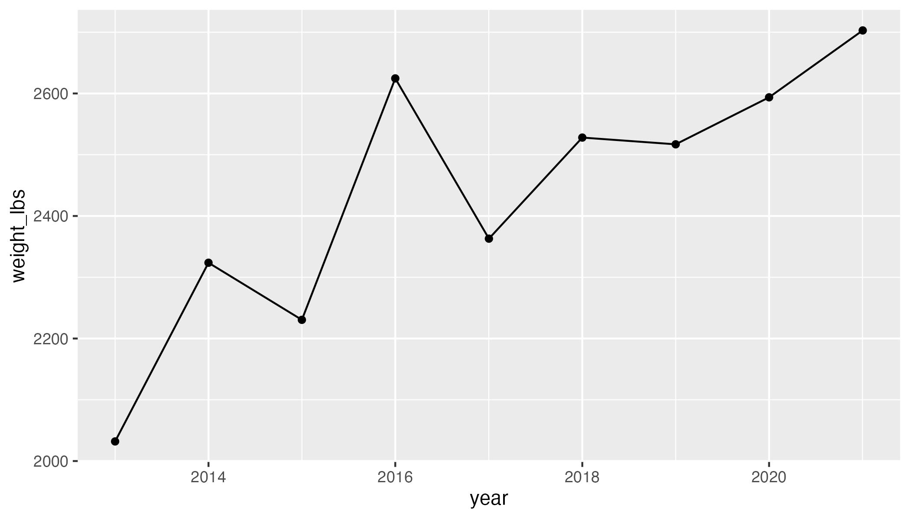

ggplot 101 recitation 🎃
Week 5
Introduction
We are going to practice using ggplot2 today, focusing wrangling data, mapping variables to aesthetics, and adding geoms.
We are going to use data from the TidyTuesday project. For this recitation, we are going to use the Giant Pumpkins data which is collected from the Great Pumpkin Commonwealth. You can learn more about how the data is structured here.
Today, you are going to make this plot:

Question: How can we replicate this plot?
Goals of this recitation
Work with real messy data
- Import data from github
- Modify variables types
- Select observations with certain values
- Wrangle some more
- Practice plotting
Download data from Github
When you open the github page you will see a file called pumpkins.csv. You also are introduced about the details of the data (i.e., variables, variable types, descriptions), as well as how to import the it.
First thing first, we are going to import the data by reading the csv file with the Github link provided. You can also read the data in by downloading it manually, saving it, and then loading it.
# load libraries
library(tidyverse)
# Import giant pumpkins data
pumpkins_raw <- readr::read_csv('WHAT-GOES-HERE??')Once we have imported our data, how can you check it out?
glimpse(pumpkins_raw)Rows: 28,065
Columns: 14
$ id <chr> "2013-F", "2013-F", "2013-F", "2013-F", "2013-F", "2…
$ place <chr> "1", "2", "3", "4", "5", "5", "7", "8", "9", "10", "…
$ weight_lbs <chr> "154.50", "146.50", "145.00", "140.80", "139.00", "1…
$ grower_name <chr> "Ellenbecker, Todd & Sequoia", "Razo, Steve", "Ellen…
$ city <chr> "Gleason", "New Middletown", "Glenson", "Combined Lo…
$ state_prov <chr> "Wisconsin", "Ohio", "Wisconsin", "Wisconsin", "Wisc…
$ country <chr> "United States", "United States", "United States", "…
$ gpc_site <chr> "Nekoosa Giant Pumpkin Fest", "Ohio Valley Giant Pum…
$ seed_mother <chr> "209 Werner", "150.5 Snyder", "209 Werner", "109 Mar…
$ pollinator_father <chr> "Self", NA, "103 Mackinnon", "209 Werner '12", "open…
$ ott <chr> "184.0", "194.0", "177.0", "194.0", "0.0", "190.0", …
$ est_weight <chr> "129.00", "151.00", "115.00", "151.00", "0.00", "141…
$ pct_chart <chr> "20.0", "-3.0", "26.0", "-7.0", "0.0", "-1.0", "-4.0…
$ variety <chr> NA, NA, NA, NA, NA, NA, NA, NA, NA, NA, NA, NA, NA, …Do some of these variables contain more than one piece of information?
- What is embedded within the variable
id? - What type of info does
idcontain? - What types of variables are
placeandweight_lbs? Are there any limitations to plotting these variable types?
Wrangling
Turn one character column into two ✂️
From both looking at the data, and reading about the variable id on the documentation page, you can see that it contains two pieces of information. To be able to interact with them separately, we need to separate this column into two columns (i.e. year and type).
Try doing this with the function separate() from the tidyr package. Or you can use separate_wider_delim().
pumpkins_raw %>%
separate(WHAT-GOES-HERE)Select observations by their values 🎃
Now that you separated the year and crop type, keep only the data for Giant Pumpkins.

pumpkins_raw %>%
filter(...predicate/condition...) Now that you hae kept only the Giant Pumpkins, retain only the observations that were the winners (i.e. those in first place).
pumpkins_raw %>%
filter(...predicate/condition...) %>%
filter(...predicate/condition...)Remove pesky strings 😑
If we were to try and plot our data as it is now we would not get our desired outcome. But try it anyway.
pumpkins_raw %>%
code-to-separate %>%
code-to-filter %>%
code-to-plotWhat is weird about this y-axis?

If you take a look at the variables of the weight_lbs column, it contains a commas as the thousand separator. R does not recognize this as a number (and instead views it as a character) so and it has to be removed prior changing the column type. There are a few ways to do this.
Let’s practice handling strings by removing the comma. You can use str_remove() function from the tidyverse package stringr. Here is an example of how str_remove() works.
wrong_number <- "700,057.58"
wrong_number[1] "700,057.58"Using str_remove()
stringr::str_remove(string = wrong_number, pattern = ",")[1] "700057.58"Remember, we don’t want to just remove the thousands place comma in one number, we want to edit the dataset to remove the comma.
In this case, you can embed str_remove() within the mutate() function, which can create new variables or modify existing ones. In our case, we want to modify the weight_lbs variable to remove the comma. Give it a try.

pumpkins_raw %>%
code-to-separate %>%
code-to-filter %>%
mutate(variable = str_remove(arguments-here)) Commas, gone! 👏👏👏
Convert character to numeric 🔢
Now the comma is gone, you can simply change the variable weight_lbs from a character to numeric, so it can be plotted like a number., to change the column type, we are going to use the as.numeric() function. Here’s some example about how to use as.numeric().
right_number_chr <- stringr::str_remove(string = wrong_number, pattern = ",")
right_number_number <- as.numeric(right_number_chr)
class(right_number_number)[1] "numeric"Let’s add this to our growing pipe.
pumpkins_raw %>%
code-to-separate %>%
code-to-filter %>%
mutate(variable = str_remove(arguments-here)) %>%
mutate(variable = as.numeric(arguments-here))Plot
With the weight_lbs variable corrected, we can re-plot.
pumpkins_raw %>%
code-to-separate %>%
code-to-filter %>%
mutate(variable = str_remove(arguments-here)) %>%
mutate(variable = as.numeric(arguments-here)) %>%
code-to-plotWhere are the lines?
Why do you think the lines aren’t showing up?
Need a hint?
Hint - look at what variable type year is.
year is.
How can you fix this? Hint, you can change year to either numeric or a date. Try using some functions from the package lubridate or the function as.Date().
pumpkins_raw %>%
code-to-separate %>%
code-to-filter %>%
mutate(variable = str_remove(arguments-here)) %>%
mutate(variable = as.numeric(arguments-here)) %>%
mutate(do-something-with-your-date) %>%
code-to-plotPlaying around
Try using different geoms besides geom_point() and geom_line(). Which might make sense in this situation?
Can you color all the lines blue?
Can you color the data based on year?
Can you change color and change shape based on country?
Can you make a plot showing the distribution of weights of all giant pumpkins entered in 2021?
Can you make a boxplot showing the distribution of weights of all giant pumpkins across all years? Also can you add all the datapoints on top of the boxplot? Is this a good idea? Might there be a better geom to use than a boxplot?